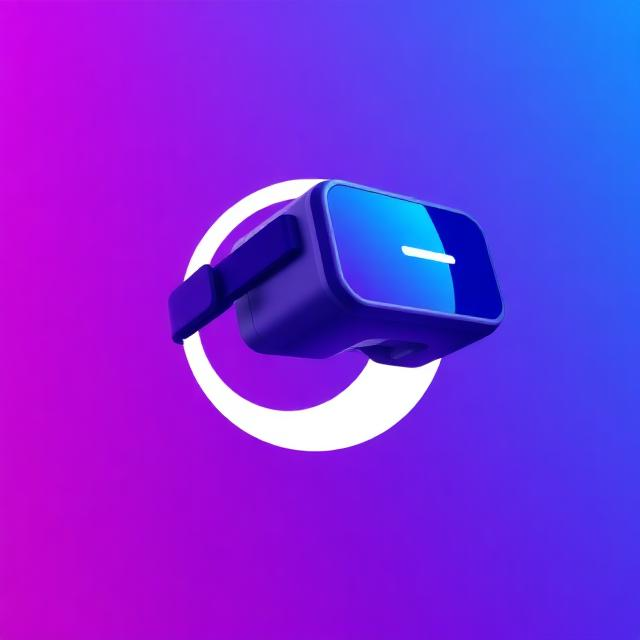

Flagship Creation
OpenDriver VR
Our biggest creation is OpenDriver VR, an open-source SteamVR driver focused on custom tracking, experimental 6DOF setups, and making VR hardware development more accessible for the community.
Current status
The project is still in active development. Current public releases should be treated as test versions, and some features are not fully stable or fully working yet.
People behind it
Main developer: diment. Founder: Lajmonek. The wider OpenDriver VR community also helps shape the project and direction.
GitHub organization: aresos-team
Founder GitHub: Rozgaleziacz
Project GitHub and download: OpenDriver-VR